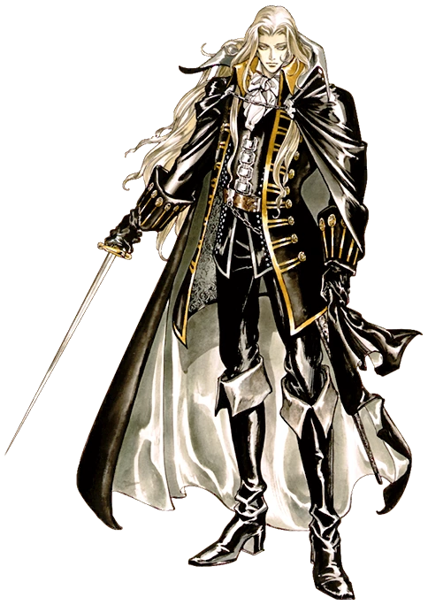

Introdução
Castlevania: Symphony of the Night e um jogo de acao-aventura 2D desenvolvido e distribuido pela Konami em 1997. Ele e o 13º titulo da serie Castlevania, sendo o primeiro a ser lancado para o console PlayStation e a sequencia cronologica de Castlevania: Rondo of Blood.
Data de lancamento inicial: 20 de marco de 1997
Desenvolvedor: Konami
Estudio: Konami
Modo: Jogo eletronico para um jogador
Plataformas: PlayStation, Android, PlayStation 4, PlayStation Portable, Sega Saturn, Xbox 360, PlayStation 3, iOS
Projetistas: Koji Igarashi, Ayami Kojima, Michiru Yamane
Generos: Metroidvania, RPG eletronico de acao
Recorde mundial de speedrun explicado